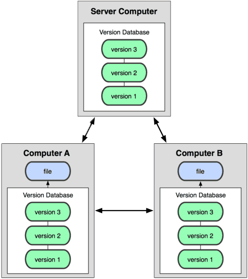
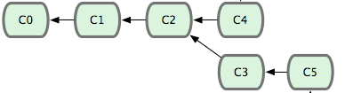
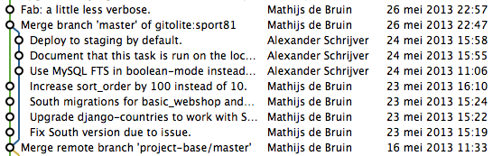
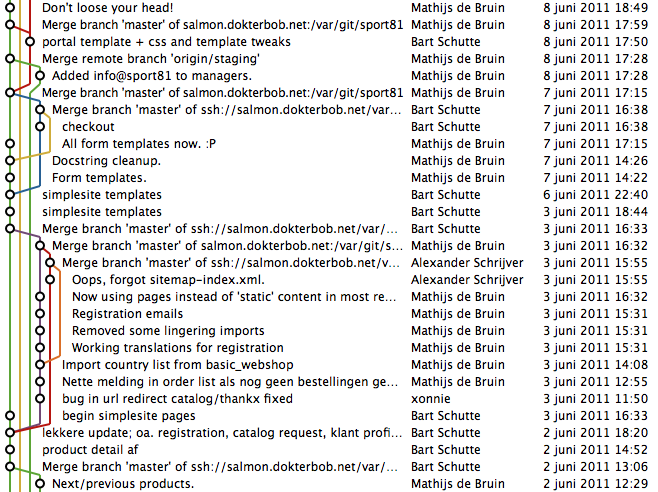
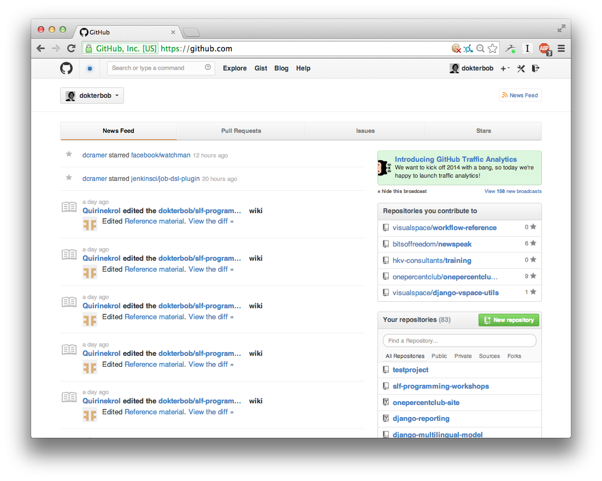
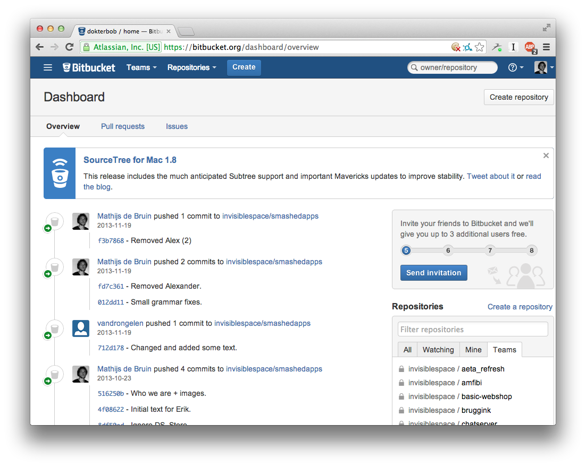
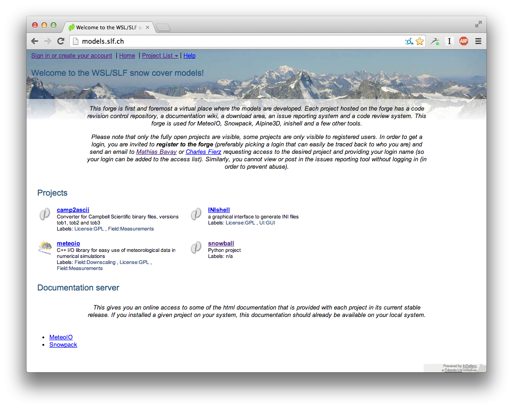

Python/programming
Lecture 3 of 3
Available online
Feel free to click along!
http://tinyurl.com/slf-python-day3
Program - day 3
- Version control; what, how and why?
-
GIT concepts
- Commits
- Tree
- Branches
- Merges
-
GITting started
- Creating a project/repository
- Committing changes
- Viewing history
- Reverting changes
- Sharing your repo
- Cloning from existing repository
- Hosting repositories
- Graphical utils
Version Control
Travelling through time!
Version Control
What
Version control is a system that records changes to a file or set of files over time so that you can recall specific versions later.
Reference: GIT - About Version Control
Version Control
How
Software automating:
- Detection of changes
- Managing project history
- Remote synchronization
Version Control
Why
- Full change history
- Revert specific changes
- Collaborate seamlessly
- Backup multiple versions
Version Control
A Brief (incomplete) History
Revision Control System (RCS)
Released in 1982 by Walter F. Tichy.
$ co sample.tex
$ ci sample.tex
$ rcsdiff sample.tex
$ rlog sample.tex
Concurrent Versions System (CVS)
Developed in 1986 bt Dick Grune at the UvA.
$ cvs checkout cvsexample
$ cvs add sample.tex
$ cvs status
$ cvs commit -m "original files" *.tex
$ cvs update
$ cvs diff
$ cvs log sample.tex
Subversion (SVN)
Created in 2000 by CollabNet as the sequel to CVS.
$ svn checkout http://host_name/svn_dir/repository_name/project/trunk project
$ svn add sample.tex
$ svn status
$ svn commit -m "original files" *.tex
$ svn update
$ svn diff
$ svn log sample.tex
GIT
Invented in 2005 by Linus Torvalds out of sheer frustration.
$ git clone https://github.com/dokterbob/slf-programming-workshops.git
$ git add sample.tex
$ git status
$ git commit -m "original files" *.tex
$ git pull / git push
$ git diff
$ git log sample.tex
GIT (and Mercurial, Bazaar)
Complete history on your computer.

GIT (and Mercurial, Bazaar)
Version database synchronized across repositories
GIT (and Mercurial, Bazaar)
Version database synchronized across repositories
- Web/HTTP
- GIT-protocol
- GIT-protocol over SSH
- No server needed
GIT vs. SVN
- Quick offline commits
- Full history offline
- Create branches - free and offline
- More commits ➞ less merge conflicts
Program - day 3
- Version control; what, how and why?
-
GIT concepts
- Commits
- Branches
- Merges
-
GITting started
- Creating a project/repository
- Committing changes
- Viewing history
- Reverting changes
- Synchronizing changes
- Cloning from existing repository
- Hosting repositories
- Graphical utils
GIT Concepts
Commits
- Atomic set of changes
- Requires description (commit message)
- Generates unique hash (code) for reference
GIT Concepts
Commits
Make changes, stage files (git add), make commit.
GIT Concepts
Commits
Commits refer to snapshots of your code, connected in a tree.

GIT Concepts
Branches
Making changes from different starting points.
GIT Concepts
Merges
Merges bring branches back together.
GIT Concepts
Merges
Many people working simultaneously
on the same project: no problem!
Merges
GIT Concepts
Merge conflicts
Two people modified the same part of the same file.
Solution: manually edit conflicting files, stage them and commit.
Reference: Git How To on Merge Conflicts
Program - day 3
- Version control; what, how and why?
-
GIT concepts
- Commits
- Tree
- Branches
- Merges
-
GITting started
- Creating a project/repository
- Committing changes
- Viewing history
- Reverting changes
- Sharing your repo
- Cloning from existing repository
- Hosting repositories
- Graphical utils
GITting started
Creating a project/repository
~ $ git init testproject
Initialized empty Git repository in /Users/drbob/testproject/.git/
~ $ cd testproject/
~/testproject $
GITting started
Check file status
~/testproject $ git status
# On branch master
#
# Initial commit
#
nothing to commit (create/copy files and use "git add" to track)
~/testproject $ echo 'Hello world' > newfile.txt
~/testproject $ git status
# On branch master
#
# Initial commit
#
# Untracked files:
# (use "git add <file>..." to include in what will be committed)
#
# newfile.txt
nothing added to commit but untracked files present (use "git add" to track)
GITting started
Adding/staging files for commit
~/testproject $ git add newfile.txt
~/testproject $ git status
# On branch master
#
# Initial commit
#
# Changes to be committed:
# (use "git rm --cached <file>..." to unstage)
#
# new file: newfile.txt
#
GITting started
Committing changes
~/testproject $ git status
# On branch master
#
# Initial commit
#
# Changes to be committed:
# (use "git rm --cached <file>..." to unstage)
#
# new file: newfile.txt
#
~/testproject $ git commit -m 'Initial checkin'
[master (root-commit) 19dc4a6] Initial checkin
1 file changed, 1 insertion(+)
create mode 100644 newfile.txt
GITting started
Viewing history
~/testproject $ git log
commit 19dc4a63d545c107ff5105ef3dea3d11bbb9d19d
Author: Mathijs de Bruin <mathijs@mathijsfietst.nl>
Date: Wed Jan 8 20:57:55 2014 +0100
Initial checkin
~/testproject $ git log -u
commit 19dc4a63d545c107ff5105ef3dea3d11bbb9d19d
Author: Mathijs de Bruin
Date: Wed Jan 8 20:57:55 2014 +0100
Initial checkin
diff --git a/newfile.txt b/newfile.txt
new file mode 100644
index 0000000..802992c
--- /dev/null
+++ b/newfile.txt
@@ -0,0 +1 @@
+Hello world
GITting started
Viewing changes
~/testproject $ echo 'New line' >> newfile.txt
~/testproject $ git diff
diff --git a/newfile.txt b/newfile.txt
index 802992c..319cb18 100644
--- a/newfile.txt
+++ b/newfile.txt
@@ -1 +1,2 @@
Hello world
+New line
GITting started
Trashing changes
~/testproject $ git status
# On branch master
# Changes not staged for commit:
# (use "git add <file>..." to update what will be committed)
# (use "git checkout -- <file>..." to discard changes in working directory)
#
# modified: newfile.txt
#
no changes added to commit (use "git add" and/or "git commit -a")
~/testproject $ git checkout newfile.txt
~/testproject $ git status
# On branch master
nothing to commit, working directory clean
GITting started
Commit additional changes
~/testproject $ echo 'New line' >> newfile.txt
~/testproject $ git add newfile.txt
~/testproject $ git commit -m 'Added a line.'
[master a943163] Added a line.
~/testproject $ git log -u
commit a943163aa561313238020d3fe509d2b70d921242
Author: Mathijs de Bruin <mathijs@mathijsfietst.nl>
Date: Wed Jan 8 21:08:40 2014 +0100
Added a line.
commit 19dc4a63d545c107ff5105ef3dea3d11bbb9d19d
Author: Mathijs de Bruin <mathijs@mathijsfietst.nl>
Date: Wed Jan 8 20:57:55 2014 +0100
Initial checkin
GITting started
Reverting changes
~/testproject $ git revert --no-edit a9431
[master aecf30c] Revert "Added a line."
1 file changed, 1 deletion(-)
~/testproject $ git log
commit aecf30c49c79542b6be4b2a499cb34f222bc3353
Author: Mathijs de Bruin <mathijs@mathijsfietst.nl>
Date: Wed Jan 8 21:14:46 2014 +0100
Revert "Added a line."
This reverts commit a943163aa561313238020d3fe509d2b70d921242.
commit a943163aa561313238020d3fe509d2b70d921242
Author: Mathijs de Bruin <mathijs@mathijsfietst.nl>
Date: Wed Jan 8 21:08:40 2014 +0100
Added a line.
commit 19dc4a63d545c107ff5105ef3dea3d11bbb9d19d
Author: Mathijs de Bruin <mathijs@mathijsfietst.nl>
Date: Wed Jan 8 20:57:55 2014 +0100
Initial checkin
GITting started
Sharing your repo
~/testproject $ git remote add origin git@github.com:dokterbob/testproj
~/testproject $ git push -u origin master
Counting objects: 7, done.
Delta compression using up to 4 threads.
Compressing objects: 100% (3/3), done.
Writing objects: 100% (7/7), 585 bytes | 0 bytes/s, done.
Total 7 (delta 1), reused 0 (delta 0)
To git@github.com:dokterbob/testproject.git
* [new branch] master -> master
Branch master set up to track remote branch master from origin. GITting started
Fetching work from others
~/testproject $ git pull
remote: Counting objects: 5, done.
remote: Total 3 (delta 0), reused 3 (delta 0)
Unpacking objects: 100% (3/3), done.
From github.com:dokterbob/testproject
aecf30c..1f8cff3 master -> origin/master
Updating aecf30c..1f8cff3
Fast-forward
newfile.txt | 1 +
1 file changed, 1 insertion(+)
GITting started
Sharing additional changes
~/testproject $ git pull
Already up-to-date.
~/testproject $ git push
Counting objects: 5, done.
Writing objects: 100% (3/3), 298 bytes | 0 bytes/s, done.
Total 3 (delta 0), reused 0 (delta 0)
To git@github.com:dokterbob/testproject.git
1f8cff3..aed0b28 master -> master
GITting started
Starting from existing repository
/tmp $ git clone git@github.com:dokterbob/testproject.git
Cloning into 'testproject'...
remote: Counting objects: 7, done.
remote: Compressing objects: 100% (2/2), done.
remote: Total 7 (delta 1), reused 7 (delta 1)
Receiving objects: 100% (7/7), done.
Resolving deltas: 100% (1/1), done.
Checking connectivity... done
/tmp $ cd testproject/
/tmp/testproject $ ls
newfile.txt
Program - day 3
- Version control; what, how and why?
-
GIT concepts
- Commits
- Tree
- Branches
- Merges
-
GITting started
- Creating a project/repository
- Committing changes
- Viewing history
- Reverting changes
- Sharing your repo
- Cloning from existing repository
- Hosting repositories
- Graphical utils
Hosting repositories
- GitHub: perfect for public stuff, expensive
- BitBucket: quite good for public and private stuff, mostly free
- SLF Models Foundry: the SLF's own repository infrastructure for private and public projects
GitHub
Bitbucket
SLF Models Foundry

Program - day 3
- Version control; what, how and why?
-
GIT concepts
- Commits
- Tree
- Branches
- Merges
-
GITting started
- Creating a project/repository
- Committing changes
- Viewing history
- Reverting changes
- Sharing your repo
- Cloning from existing repository
- Hosting repositories
- Graphical utils
Graphical clients
Wrappers around the command line utils.
- SourceTree
- Tower
- GitX
- GitHub
Reference: GIT GUI's